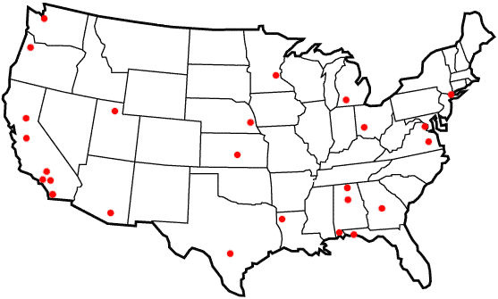

Blackbird Locations
All of the Blackbird Locations have been sorted by state/region and can be searched by the clickable map below. Just click a red dot on the map and you will be taken to a list of Blackbirds that are in the area. If you are looking for the locations and losses in chronological order by serial number, please visit the A-12, YF-12, and SR-71 separate location lists.

Search by state:
Alabama | Arizona | California | Florida |
Georgia | Kansas | Louisiana | Michigan | Minnesota
Nebraska | New York | Ohio | Oregon | Texas |
Utah | Virginia | Washington
Outside the United States:
Alabama:
A-12 #06930 - On display at the U.S. Space & Rocket Center, Huntsville, AL.
A-12 #06937 - On display at the Southern Museum of Flight, Birmingham, AL.
A-12 #06938 - On display at the USS Alabama Battleship Memorial Park, Mobile, AL.
Arizona:
SR-71A #17951 - On display at the Pima Air Museum, Tucson, AZ.
California:
A-12 #06924 - On display at the Blackbird Airpark in Palmdale, CA.
A-12 #06927 - On display at the California Science Center in Los Angeles, CA.
A-12 #06933 - On display at the San Diego Aerospace Museum, in San Diego, CA.
SR-71A #17955 - On display at the AFFTC Museum, Edwards AFB, CA.
SR-71A #17960 - On display at the Castle Air Museum near Atwater, CA.
SR-71A #17963 - On display at Beale AFB, CA.
SR-71A #17973 - On display at the Blackbird Airpark, Palmdale, CA.
SR-71A #17975 - On display at the March Field Museum, March AFB, CA.
SR-71A #17980 - On display at NASA's Dryden Flight Research Center as #844.
Florida:
SR-71A #17959 - On display at the USAF Armament Museum, Eglin AFB, FL.
Georgia:
SR-71A #17958 - On display at the Museum of Aviation, Robins AFB, GA.
Kansas:
SR-71A #17961 - On display at the Kansas Cosmosphere and Space Center, Hutchinson, KS.
Louisiana:
SR-71A #17967 - On display at the 8th Air Force Museum, Barksdale AFB, LA.
Michigan:
SR-71B #17956 - On display at the Kalamazoo Aviation History Museum in Kalamazoo, MI.
Minnesota:
A-12 #06931 - On display at the Minnesota Air National Guard Museum, MN.
Nebraska:
SR-71A #17964 - On display at the Strategic Air and Space Museum, near Ashland, NE.
New York:
A-12 #06925 - On display at USS Intrepid Sea-Air-Space Museum in the New York City Harbor.
Ohio:
YF-12A #06935 - On display at the National Museum of the United States Air Force, Wright-Patterson AFB, OH.
SR-71A #17976 - On display at the National Museum of the United States Air Force, Wright-Patterson AFB, OH.
Oregon:
SR-71A #17971 - On display at the Evergreen Aviation Museum in McMinnville, OR.
Texas:
SR-71A #17979 - On display at the USAF History and Traditions Museum, Lackland AFB, TX.
Utah:
SR-71C #17981 - On display at the Hill Aerospace Museum, Hill AFB, UT.
Virginia:
SR-71A #17968 - On display at the Virginia Aviation Museum in Richmond, VA.
SR-71A #17972 - On display at the Smithsonian National Air and Space Museum Steven F. Udvar-Hazy Center in Chantilly, VA.
Washington:
M-21 #06940 - On display at the Museum of Flight, Seattle, WA.
United Kingdom:
SR-71A #17962 - On display at the Imperial War Museum in Duxford, England.